Fact sheet
- Game
- Chronicle of Gods
- Genre
- Single-player god game
- Developer
- Tobias Steiner, St. Pölten, Austria
- Publisher
- Tobias Steiner (self-published)
- Platform
- Windows PC, on Steam
- Release
- Coming to Early Access. The current target date is on the Steam page.
- Languages
- English, German (interface)
- Price
- Not announced yet
- Steam
- store.steampowered.com/app/5221390
- Website
- chronicleofgods.com
- Contact
- hello@chronicleofgods.com
- Elsewhere
- YouTube · Bluesky · X · Discord
In a few lines
You are one god in a pantheon of rivals. On living worlds of wandering peoples, rising cities and warring realms, gods compete for faith and mortals toil. Older than any realm, the Chronicle remembers the deeds of mortals and gods alike. Can anyone prove which were yours?
Chronicle of Gods is a single-player god game set on a world that makes its own history. You play one of its gods, among rivals with plans of their own. You reach into the world of mortals, and the Chronicle writes what comes of it into a book you can open at any time.
Gameplay trailer
38 seconds, 3840 × 2160, with music and sound. It’s the trailer that plays first on the Steam page.
Music: SERVER (Ancient / Cinematic / Rituals) by Rockot, from Pixabay. Sound: G43-10 Volcanic Eruption by freesound_community, from Pixabay.
Screenshots
The seven on the Steam page, at full size. Choose one to open it.
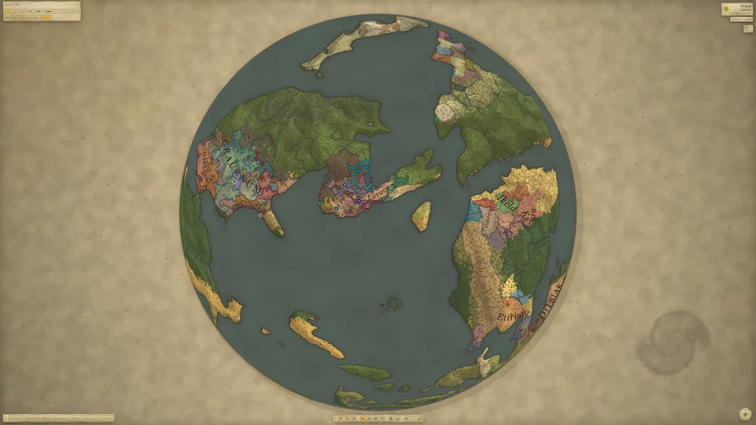
A young world: three settled regions round an inland sea, wilderness everywhere else.JPG · 3840 × 2160
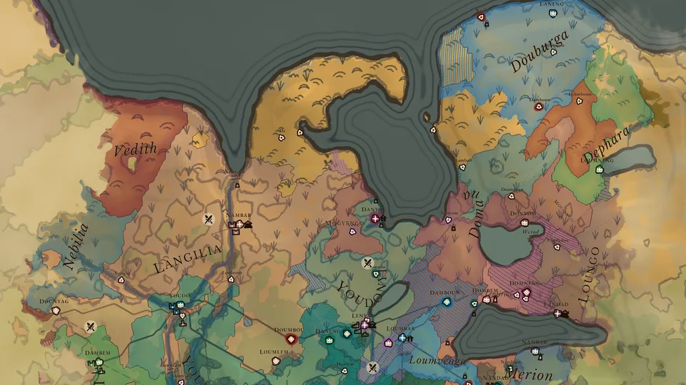
A realm up close, with unknown land framing it at the sides.JPG · 3200 × 1800
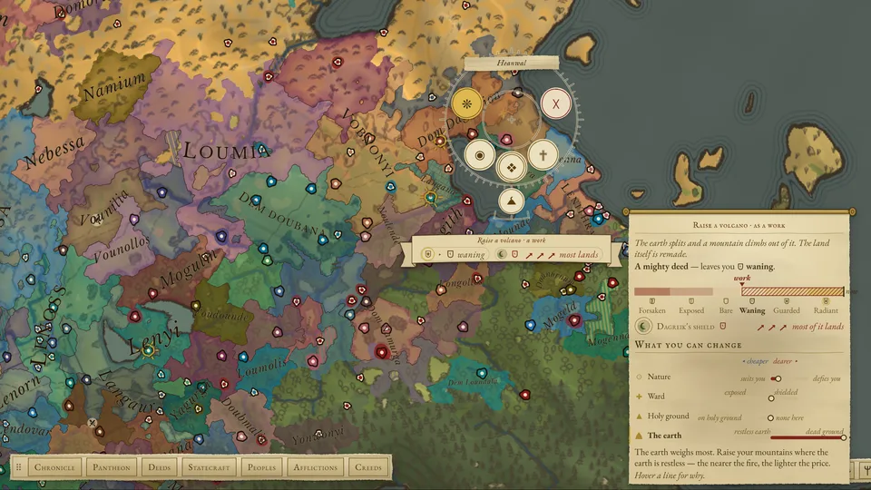
An act in aim: raising a volcano at Heanwal, with a rival god’s shield weighed in its card.JPG · 3104 × 1746
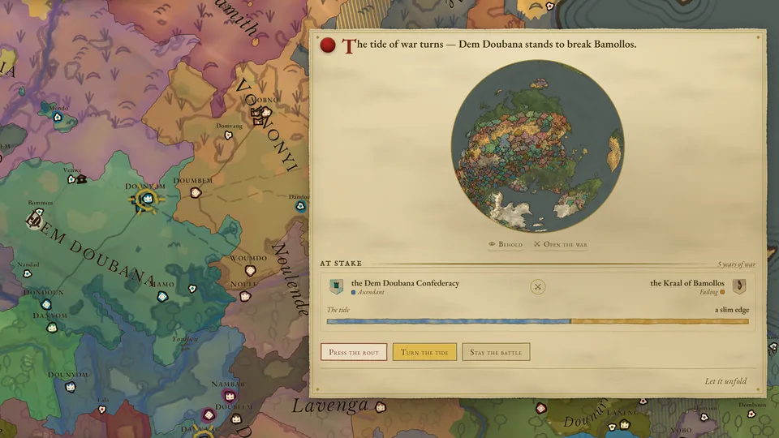
The tide of a war turns, and the world waits for you to decide which way it falls.JPG · 3104 × 1746
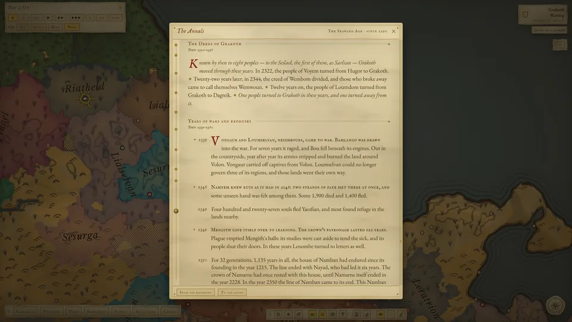
The Chronicle’s annals: the deeds of a ruler and a war told in full.JPG · 3840 × 2160
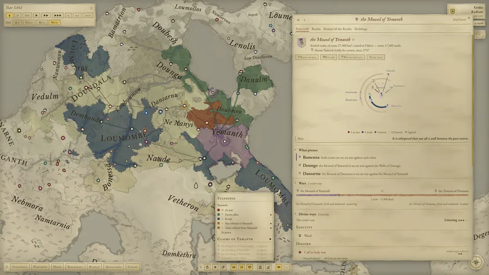
Statecraft: a realm’s court, its rivals and pacts, and the war it’s fighting.JPG · 1920 × 1080
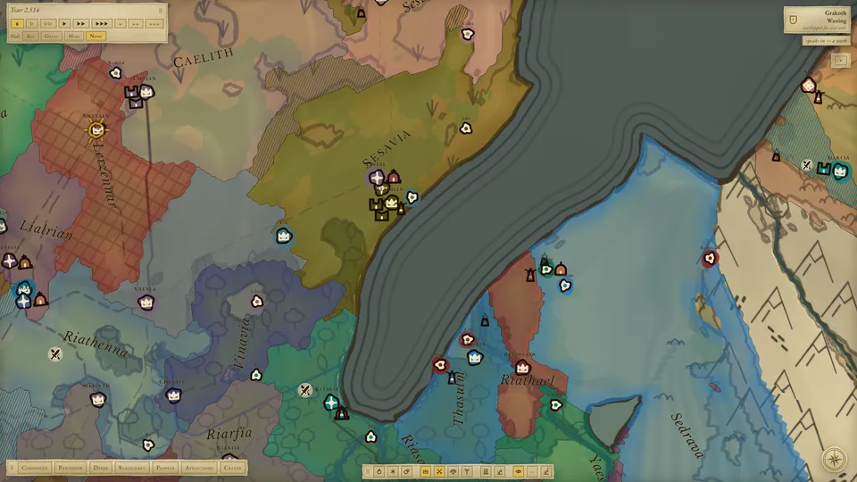
Towns round a bay, each seal in the colour of its realm.JPG · 3840 × 2160


Key art and logo
-
Logo, transparent background.PNG · 1280 × 400
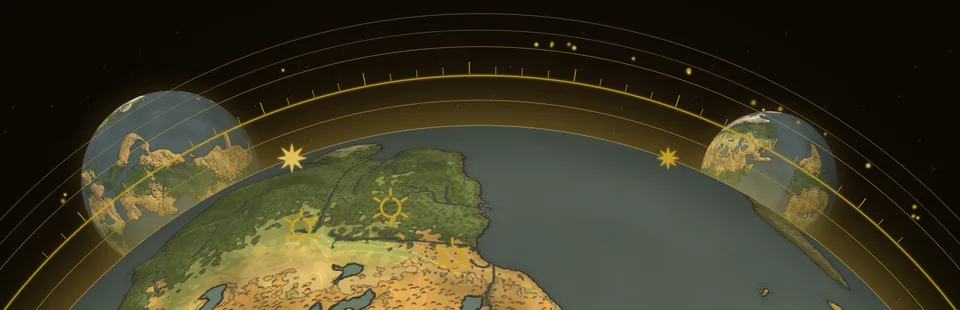
Key art without text.PNG · 3840 × 1240
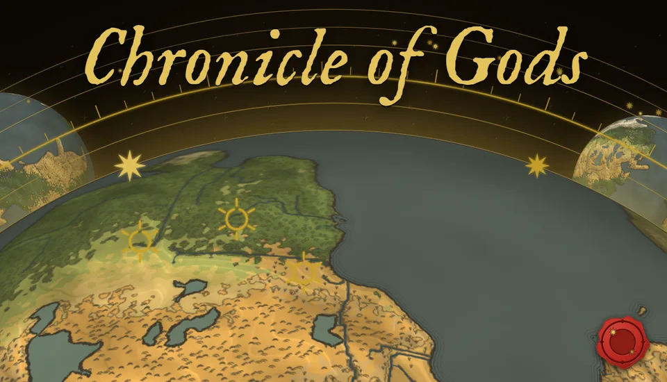
Key art with the title.PNG · 1232 × 706
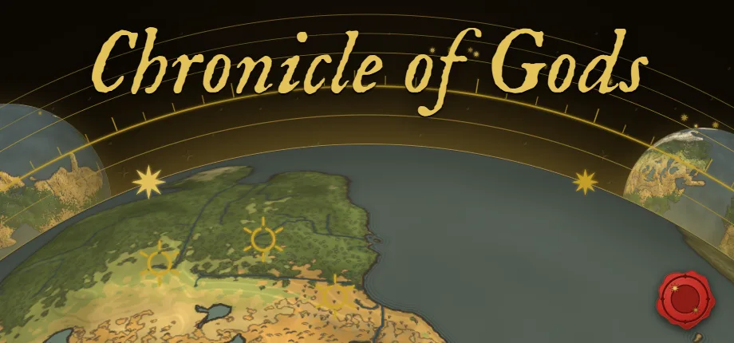
Header, as on Steam.PNG · 920 × 430
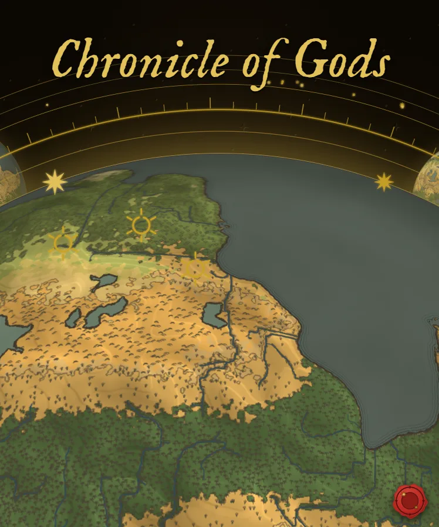
Upright, with the title.PNG · 748 × 896


Short clips
Looping GIFs from the Steam page, for articles that can’t embed a video.
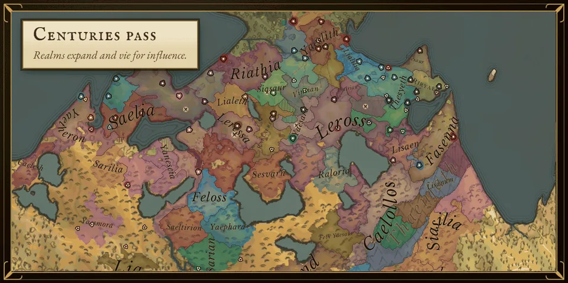
Centuries pass: realms spread, split and fall.GIF · 1170 × 584 · 2.8 MB
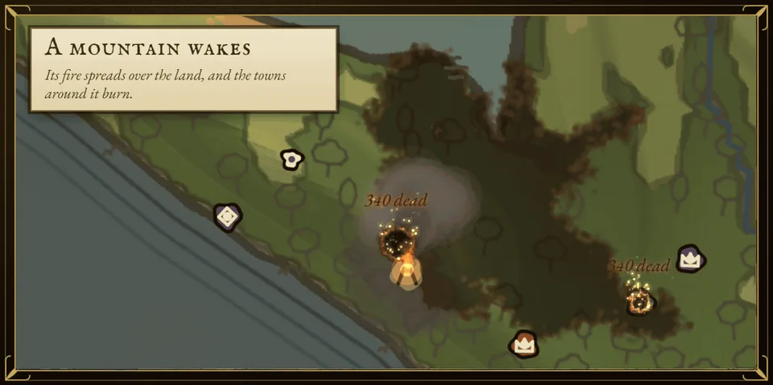
A mountain wakes: its fire spreads over the land, and the towns around it burn.GIF · 1170 × 584 · 2.1 MB
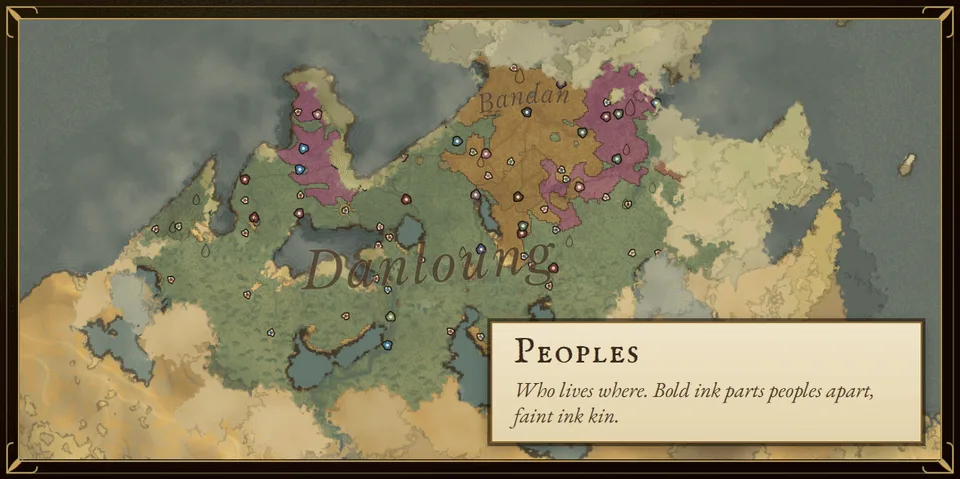
One world through its map layers.GIF · 1170 × 584 · 2.0 MB
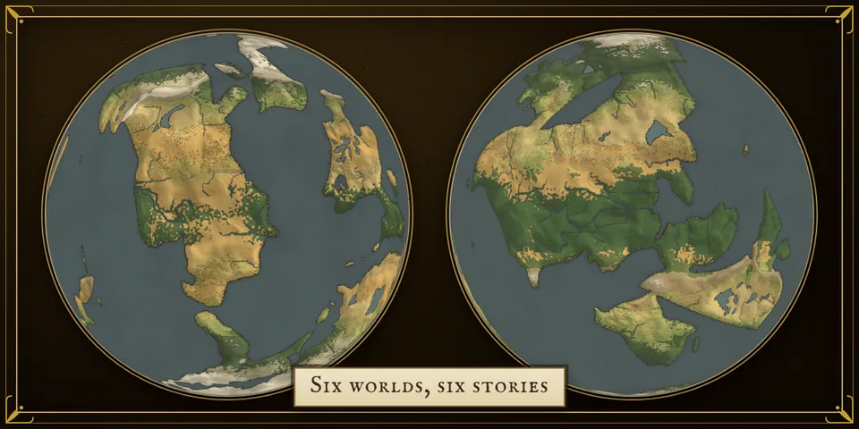
Six worlds, each grown from its own word.GIF · 1232 × 616 · 1.7 MB


About the game
The full description from the Steam page.
Your hand on the world
You have dozens of acts, some merciful and some cruel, and you aim each one at a land, a people, a realm, a great house or another god.
- The land: Bless the harvest or blight it. Call down a tempest, send a killing stroke from the sky or raise a volcano.
- Peoples: Bless their learning so they take up farming sooner. Rouse a wandering horde against a neighbouring realm.
- Faith: Consecrate a region as holy ground in your name. Send the faithful out to spread your worship to other lands, even across the sea.
- Realms: Whisper a court towards war, counsel it towards peace or call a holy war. Press one realm to bow to another and stir subject realms to break free.
- Great houses: Inside a realm, great houses vie for power, and one of them may rule. Tip the balance as you see fit: anoint a house as rightful or condemn it as false, back it with your patronage or turn it to sedition. You can even bring death closer to its head, or hold it off for a span of years.
- Sight: Even a god cannot watch everything at once. Follow a few realms to keep their lands under your gaze wherever they spread, or turn your eye on any other land. Ward your ground against other gods, read a court’s hidden dealings or borrow a rival god’s sight for a while.
Moments that wait for you
When an army gathers for a siege, the fortunes of a war turn, a realm sues for peace or a plague takes hold, the world halts at the tipping point and waits for you to decide which way it falls. You might stop a siege before it begins, or whisper to the besiegers to raze the city to the ground. You can end a plague or make it deadlier. You choose which moments halt the world and how fast time runs between them. The slowest speed lets you follow a single siege, and at the fastest, millennia pass at a glance.
You are not the only god
Rival gods are born from the faith of mortals, and they fade when too few still worship them. They hold grudges and make pacts, and they often move against you where you cannot see.
A god’s deeds leave marks on the land that show what kind of god made them, though not always which one. Read them and weigh the suspects. You can offer a rival a truce or a full accord, and rivals will make offers to you as well. Wrong too many gods, though, and their grudges converge until they turn on you together.
You become what you do
Every people that learns of you gives you a name in its own tongue. Everything you do shapes the god you truly are. What people see you do decides what they believe you are: merciful or wrathful, a god of order or of chaos. The two need not match. As that belief changes, the world gives you new epithets. Deeds true to your nature come easily. Deeds against it come hard, and can turn your worshippers from you.
Faith follows souls
Faith lives in people, so it moves when they move. Migrants and missionaries carry it to new lands, and it fades where its believers are gone. Rival gods court the same peoples, and a land’s faith can pass from one god to another. Where gods are worshipped side by side, creeds form, and even inside a creed the gods compete for primacy.
You see the world through your worshippers, the realms you follow and the land you turn your eye to. Everywhere else, the map shows only what you last knew of it, and beyond that, unknown land.
A world with its own history
Every world, down to its continents and rivers, grows from a word you choose. You also decide how warm it is and how much mineral wealth lies in its ground.
Bands of foragers wander it, learn to farm and settle. Villages grow into cities, and some cities become the seats of realms.
Realms trade, make alliances, form leagues and bring others under their control. They also make war, rebel, break apart and fall. Their peoples discover new knowledge as they go, from the first stone tools to writing and coinage.
A single world can run for thousands of years. It lives on its own, and what you do changes its course.
The Chronicle
The Chronicle was writing before the first realm rose, and it will still be writing when the last one falls. Its book is divided into ages, each with its own dawn and dusk. It tells of rulers’ lives and the fortunes of the powerful, and your deeds are written there among theirs. The Chronicle knows where a god has touched the world, but it does not always say which god.
Each world gets a different book, and its ages are named for what defined them, such as the Age of Tangled Fates or the Age of Fading Gods.
Goals you set yourself
There is no score and no win screen. Peoples vanish and realms collapse, and none of it counts against you. What you set out to do is up to you: carry your faith across a continent, raise a house until it rules, keep one people alive through the hungry years or starve a rival of worshippers until it fades.
Who makes it
Chronicle of Gods is made by Tobias Steiner (Tobi) in St. Pölten, Austria, and is coming to Early Access on Steam. Everything described above is in the game today.
How AI is used
The same disclosure as on the Steam page.
Chronicle of Gods is made by one person with the help of AI coding assistants. AI is used as a programming tool: writing, refactoring and testing source code to my specification. The game's English text (the interface, the tooltips and the sentence templates the chronicle is built from) was also written with these assistants, to my direction. No image, music or voice model was used. Everything visible, from the globe and the maps to the heraldry, the icons and the interface, is drawn by code, and that code was written with the same assistants to my direction. The sound effects are my own recordings, plus one public-domain (CC0) recording; there is no music yet. The histories each world produces are assembled by procedural systems I designed, not by a language model. The shipped game contains no live-generated AI content: nothing calls out to an AI model while you play, and the game does not require a network connection to generate anything.
Get in touch
For questions, an interview or a key once there’s a build to play, write to hello@chronicleofgods.com. If you cover the game, I’d love to see it.